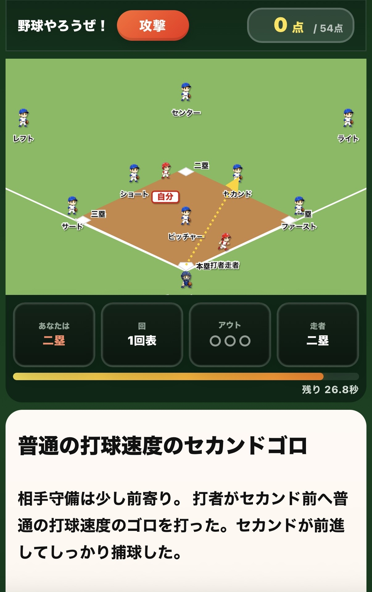
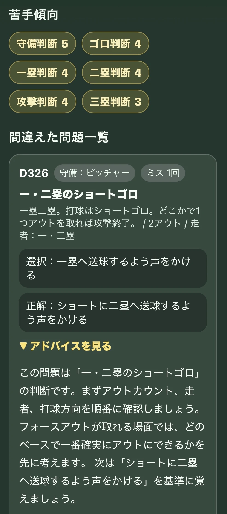
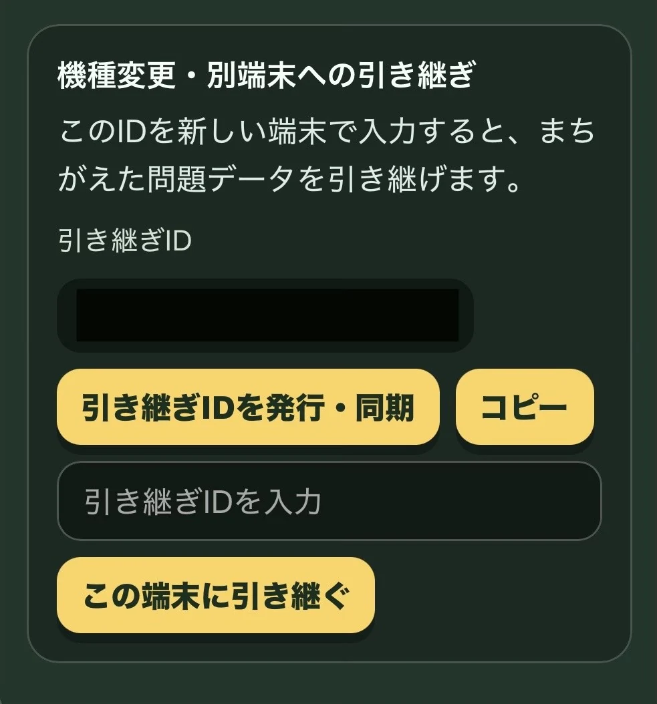
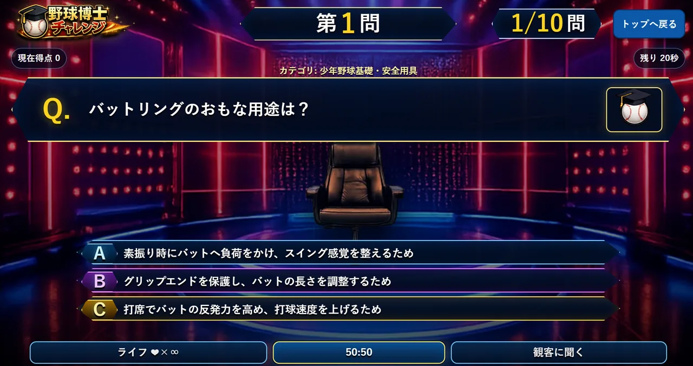

野球やろうぜ！
IDの入力制限について
大文字・小文字は同じIDとして扱います。
不適切な言葉、公式と誤認される表現、個人情報、企業名・商標・有名キャラクター名にあたる表現は使用できません。
プレイヤーIDでログインし、マイページで招待IDまたは管理者IDを登録して機能を解放すると利用できます。
少年野球シミュレーター「野球やろうぜ！」
試合で迷わない選手になる。
遊びながら判断力を鍛えよう。
試合でよくある走塁・守備・カバー・声かけを、画面を見ながら選ぶ判断トレーニングです。 「次に何をするか」をすばやく考える力を育てます。
動作環境
推奨環境は、iPhone/iPadはSafari、AndroidはChrome、PCはChrome・Edge・Safariです。 LINEやSNSアプリ内ブラウザ、古いOS・ブラウザ、プライベートブラウズでは、PWAインストール・通知・スコア保存が不安定になる場合があります。 うまく動かない場合は、Safari / Chrome / Edgeで開き直してください。
画面イメージ

このゲームで身につくこと
走塁判断
打球・送球・牽制を見て、進む、戻る、確認する判断を練習します。
守備判断
どこでアウトを取るか、どこへ送球するかを場面ごとに考えます。
カバーと声かけ
送球ミスへの備え、ベースカバー、中継、声かけの基本を学びます。
高学年向け判断
バント、牽制、打順、複数走者など難しい場面にも挑戦します。
遊び方はかんたん
- 1. IDを入力：成績を保存するためのプレイヤーIDを入力します。
- 2. 学年と守備位置を選ぶ：学年ごとの制限時間でプレイします。
- 3. 場面を見て答える：矢印、ランナー、守備位置を見て判断します。
- 4. 結果を確認：3点、1点、0点で判定され、40点以上で次へ進めます。
出題のしくみ
- 通常モードは全18問。攻撃と守備の判断問題が出ます。
- 3年生以下は基本動作モード。10問でルールや名前を覚えます。
学年と制限時間
3年生以下
基本動作モード。制限時間なし。まずはルールと名前を覚えます。
3年生 / 30秒
走る・戻る・ボールを見るなど、基本判断を練習します。
4年生 / 25秒
守備位置ごとの役割、ベースカバー、タッチアップを学びます。
5年生 / 20秒
フォースプレイ、牽制、暴投・悪送球後の判断を練習します。
6年生 / 15秒
中継、カット、ボーク、打順を意識した高学年向け判断を学びます。
画面の見方
- 矢印：打球や送球の方向です。
- ランナー：どの塁にいるかを確認します。
- あなた：自分が判断する守備位置や走者を表します。
クリアとランキング
- 通常モードは満点54点。40点以上で次の学年が解放されます。
- 学年解放は守備位置ごとに判定されます。
- マイページで成績、ランキングで全体順位を確認できます。
オプション機能
間違いプレイチェック
0点・1点だった問題を記録し、復習ポイントを確認できます。

端末引継ぎ
機種変更や別端末でも、引き継ぎIDで記録を引き継げます。

NEW! 野球博士チャレンジ

トップ画面の「野球博士チャレンジ」から始める、野球知識クイズです。守備・走塁判断ではなく、用具、安全、少年野球ルール、施設知識などを学びます。
- 全20問のクイズに挑戦します。
- 制限時間あり。残り10秒から中央にカウントダウンが表示されます。
- 50:50は1ゲームに1回だけ、間違いの選択肢を1つ消せます。
- 第15問以降は高得点チャレンジです。正解するたびに加算率が上がり、失敗すると獲得点数は0点になります。
- 野球博士チャレンジ機能が解放されたプレイヤーIDで遊ぶと、ランキングとマイページの記録に反映されます。
オプション機能は、招待IDまたは管理者IDで対象機能が解放されたプレイヤーIDで利用できます。
目標
「今、自分はどこへ動くべきか」を考えて動ける選手を目指します。くり返し遊びながら、走塁・守備・声かけ・カバーの判断力を高めましょう。
高学年問題には複数の考え方がある場面もあります。基本判断を学ぶためのヒントとして利用してください。
マイページ
自分のIDと成績
ランキング
全ユーザー成績ランキング
結果
ランキング
野球博士ランク一覧
お知らせ
管理者からのお知らせ
設定
ゲーム設定
管理者用モード
管理者IDでログインしている場合、管理者用モードは常に有効です。オン・オフの切り替えはできません。
学年ロックとポジション制限が解除され、すべての学年・守備位置を選択でき、制限時間なしで問題を検証できます。
このモードでプレイした結果はランキング・マイページ成績・学年解放には反映されません。
要望フォーム
送信された要望データ
オプション機能
間違いプレイチェック機能をオンにすると、通常プレイで0点・1点だった問題をこの端末に記録し、マイページで復習できます。
まずは端末内保存のオプション機能として実装しています。
プッシュ通知
通知をオンにすると、ホーム画面アプリにランキング更新やお知らせを送れるようになります。
※iPhone・iPadではホーム画面アプリから開いている時のみ通知設定できます。
プレイヤーID変更
現在のプレイヤーIDを新しいプレイヤーIDに変更できます。成績、ランキング、学年解放、間違いプレイ記録、招待IDの紐づきなどは新しいプレイヤーIDへ引き継がれます。 ※変更は1日1回までです。すでに使われているプレイヤーIDには変更できません。 スマホ・iPadではホーム画面アプリから開いている時のみ変更できます。
IDの入力制限について
大文字・小文字は同じIDとして重複判定します。
不適切な言葉、公式と誤認される表現、個人情報、企業名・商標・有名キャラクター名にあたる表現は使用できません。